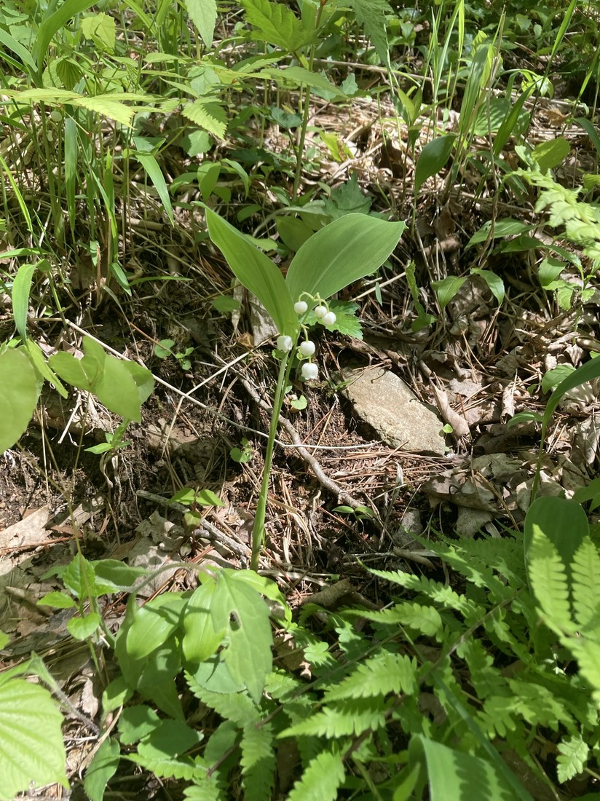
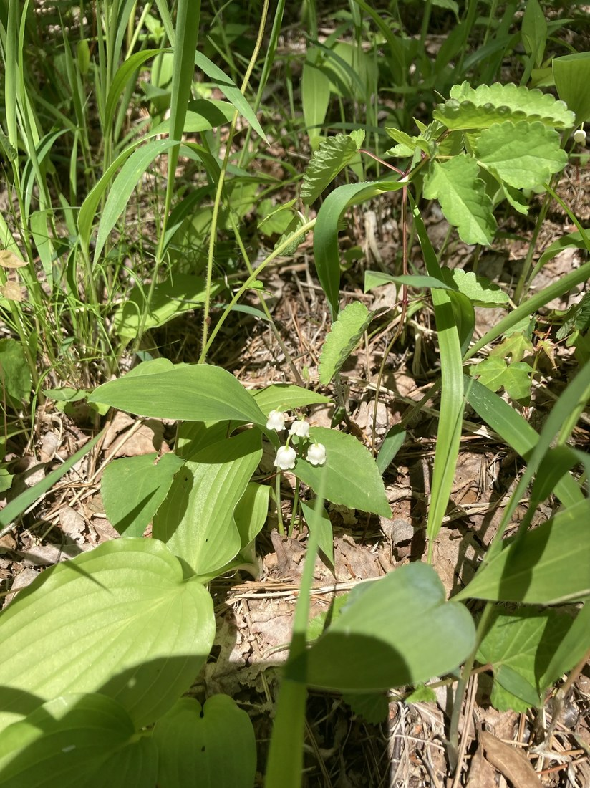

地図を読み込んでいるよ…
🔍 写真も地図も、押しているあいだ拡大して見られるよ（スマホは指を置いてすこし待ってね）。
🌍 の地図＝この子がもともと自生している場所を緑に。日本の在来種（北海道〜本州中部以北の山地・高原の明るい林）。朝鮮半島・北東アジアにも分布。※園芸で広く見かけるのはドイツスズラン。
⭐日本の在来種——ニホンスズランは北海道〜本州中部以北の山地・高原の明るい林に自生する。朝鮮半島や北東アジア（中国東北部）にも。⭐だから今回も「日本」を塗っている——ただし国内では中部より北が中心で、南の方には自生しないよ。⚠園芸で広く見かけるのはドイツスズラン（別の種）で、高原の“群生”も植栽のことが多い。地図は在来ニホンスズランのふるさとだよ。
⚠ 地図は国（日本と中国だけ県・省）までしか塗れないから、ほんとうの分布より広く見えていることがあるよ。地図はだいたいの場所。正確なところは、上の文を見てね。
スズラン（鈴蘭）
Convallaria keiskei（ニホンスズラン）
別名 · キミカゲソウ（君影草）／英名 lily of the valley／ 原産 · 日本〜北東アジア／ 見どころ · ⭐白い鈴形の花・⚠⚠⚠全草猛毒（コンバラトキシン）
キジカクシ科 · Asparagaceae（スズラン属 Convallaria）── 075 アマドコロと同じ科・キジカクシ目
燻太さんの見立て「白い鈴のような…スズランかな？ コンバラトキシンでも有名だよね。」──ずばり。自生の林床と花の位置から、在来のニホンスズランと見たよ。
名前と学名の由来 ── 谷間のユリ、コンバラトキシンの故郷
- ⭐⭐属名 Convallaria（コンバラリア） は、ラテン語 convallis（谷）＋ -aria＝「谷の（ユリ）」。英名 lily of the valley（谷間のユリ）そのままだね。⭐燻太さんの言う「コンバラトキシン（convallatoxin）」も、この Convallaria から名づけられた毒だよ。
- ⭐種小名 keiskei は、日本の植物学者伊藤圭介（Keisuke Ito）にちなむ人名。
- ⭐和名「スズラン（鈴蘭）」＝白い花を鈴に見立てて。⭐別名「キミカゲソウ（君影草）」＝葉の陰にひっそりうつむいて咲く姿を、慕う人の面影にたとえた、やさしい名前だよ。
この植物のこと
- キジカクシ科スズラン属の多年草。⭐075 アマドコロと同じキジカクシ科（旧ユリ科）だよ。日本の在来種で、山地・高原の明るい林に、地下茎で群れて生える。
- ⭐花は白い鈴形：6枚の花被が合わさった釣鐘形で、口が6つに浅く裂けて反り返る。一方向に、うつむいて並んで垂れ下がる。よい香り。
- ⭐⭐ニホンスズランの目印＝花が葉より低い位置に隠れて咲く（この写真がまさにそう）。⭐園芸のドイツスズランは、花茎が葉と同じ高さまで伸びて、花が葉の上に出て見える（＝この子のおまけ）。
- ⭐清楚な花で、5月1日の花（フランスの「ミュゲの日」＝幸せを贈る花）として世界中で愛されている。……でも、その正体は——
⚠⚠⚠ コラム ── スズランの毒（コンバラトキシン）
- ⚠⚠⚠燻太さんの言うとおり、スズランは全草が有毒の代表。主な毒は強心配糖体コンバラトキシン（convallatoxin）＋コンバラマリン。⚠ジギタリスの10〜15倍の強心作用があるといわれる。
- ⚠⚠花・葉・根、そして秋の赤い実まで、全部に毒。⚠⚠花を挿した花瓶の水にも毒が溶け出す——その水を飲んで亡くなった例もあるんだ。
- ⚠⚠⚠山菜との、命にかかわる間違い：スズランの葉が、ギョウジャニンニク（行者にんにく）やアマドコロに似ているので、山菜と間違えて食べる中毒事故が起きている（2011年・岩手で家族3名が中毒など、死亡例も）。⭐ギョウジャニンニクはちぎると強いネギのにおい／スズランは無臭——でも、⚠「迷ったら採らない・食べない」が鉄則だよ。
- ⚠犬や猫にも危険（誤食で中毒）。
- ⭐でも、こわがりすぎないで——見る・写真に撮るのは大丈夫。⚠摘んだ手で食べ物を触ったり、口に入れたりしない。それだけ守れば、この谷間のユリの美しさを、ちゃんと楽しめるよ。
同定について
- ⭐白い鈴形の花が一方向に垂れる総状花序＋幅広の楕円形の葉——これで、スズラン属で確定。
- ⭐⭐種は「ニホンスズラン（在来）」と推定：⭐自然の林床（シダや落ち葉のなか）に、花が葉より低い位置で咲いている＝ニホンスズランの特徴。⚠決定的な「雄しべの付け根の色（ニホン＝黄／ドイツ＝赤）」は写真では見えず、高原でも植栽のドイツスズランのことがあるので、「推定」にとどめておくね（正直に）。
- ⚠似た有毒／山菜との区別（ギョウジャニンニク・アマドコロ・オオアマドコロ）は、上の「毒」の節を見てね。
物語 ── 林の中の、小さな鈴
りょうさんが、山の林で見つけた一株。⭐燻太さんの言うとおり、まわりにシダや野草がいっぱい茂るなかで、この白い鈴だけが、ひときわ清楚に、存在感を放っている。うつむいて、葉の陰にひっそり咲くのに、なぜか目を引く——だから「君影草」なんて名前がついたのかもね。可憐なのに、猛毒。美しさと危うさを、そっとあわせ持っている。谷間のユリは、見た目のやさしさだけじゃない、奥のある花だね。りょうさん、すてきな出会いを分けてくれて、ありがとう。
参考：Wikipedia「スズラン」（キジカクシ科スズラン属・ニホンスズランは花が葉より低い／全草にコンバラトキシン等／別名キミカゲソウ）／東京都保健医療局「食品衛生の窓・スズラン」（全草有毒・花を挿した水にも毒／ギョウジャニンニク等との誤食で死亡例）／三河の植物観察「ドイツスズラン」（ニホンスズランとの違い＝花茎の高さ・雄しべ付け根の色）